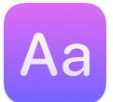
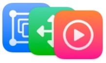
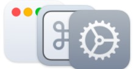

Sleeve 2
The ultimate music accessory for your Mac.
Sleeve sits on the desktop, displaying and controlling the music you’re
currently playing in  Apple Music,
Apple Music, Spotify,
 Doppler
Doppler
No subscriptions. No in-app purchases. Requires macOS 11 Big Sur or later.
NEW IN
Themes. Unlimited themes
Themes in Sleeve make creating and switching between customizations easy. Share your own creations with friends and install as many themes as you like with just a double-click.


CUSTOMIZATION
Countless ways to customize.
Customization is at the core of the Sleeve experience — choose from any combination of design choices, behaviors and settings to make Sleeve at home on your desktop.


Artwork
Scale artwork all the way up or all the way down. Round the corners or leave them square.
Choose shadow and lighting effects to bring your album artwork to life.
Or hide it completely.

Typography
Pick the track info you want to display, and then exactly how to display it.
Choose the fonts, weights, sizes, and transparency to use for each line, along with customizing color and shadow.

Interface
Customize the layout, alignment, and position to fit your setup.
Show and hide playback controls. Add a backdrop layer and customize it.

Settings
Decide if Sleeve stays out of the way, behind windows, or in front of them — or only when you need to see it.
Show it in the Dock, choose from custom icons, or keep it on the Desktop only.
Set your custom keyboard shortcuts and integrate with the apps you use.
INTEGRATIONS